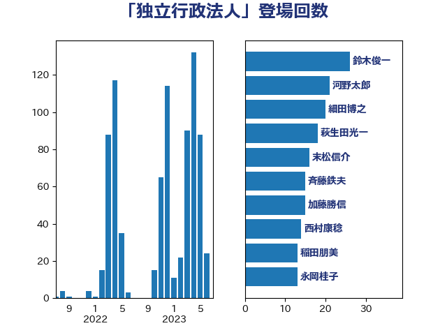

単語「独立行政法人」

| 萩生田光一 | 自由民主党 | 26 回 |
| 田村智子 | 日本共産党 | 19 回 |
| 末松信介 | 自由民主党 | 15 回 |
| 山本順三 | 自由民主党 | 10 回 |
| 小林鷹之 | 自由民主党 | 9 回 |
| 平井卓也 | 自由民主党 | 9 回 |
| 森屋宏 | 自由民主党 | 9 回 |
| 福島みずほ | 社会民主党 | 9 回 |
| 鳩山二郎 | 自由民主党 | 9 回 |
| 梶山弘志 | 自由民主党 | 8 回 |
| 木原誠二 | 自由民主党 | 7 回 |
| 石川香織 | 立憲民主党 | 7 回 |
| 柴田巧 | 日本維新の会 | 6 回 |
| 遠藤利明 | 自由民主党 | 6 回 |
| 阿部知子 | 立憲民主党 | 6 回 |
| 高木毅 | 自由民主党 | 6 回 |
| 橋本岳 | 自由民主党 | 5 回 |
| 塩川鉄也 | 日本共産党 | 4 回 |
| 斎藤嘉隆 | 立憲民主党 | 4 回 |
| 赤羽一嘉 | 公明党 | 4 回 |
| あかま二郎 | 自由民主党 | 3 回 |
| 吉川ゆうみ | 自由民主党 | 3 回 |
| 塩田博昭 | 公明党 | 3 回 |
| 太田房江 | 自由民主党 | 3 回 |
| 小野泰輔 | 日本維新の会 | 3 回 |
| 後藤茂之 | 自由民主党 | 3 回 |
| 斉藤鉄夫 | 公明党 | 3 回 |
| 根本匠 | 自由民主党 | 3 回 |
| 森田俊和 | 立憲民主党 | 3 回 |
| 武田良太 | 自由民主党 | 3 回 |
| 石原宏高 | 自由民主党 | 3 回 |
| 紙智子 | 日本共産党 | 3 回 |
| 長妻昭 | 立憲民主党 | 3 回 |
| 青柳陽一郎 | 立憲民主党 | 3 回 |
| 三浦靖 | 自由民主党 | 2 回 |
| 中島克仁 | 立憲民主党 | 2 回 |
| 串田誠一 | 日本維新の会 | 2 回 |
| 伊藤岳 | 日本共産党 | 2 回 |
| 城井崇 | 立憲民主党 | 2 回 |
| 大串博志 | 立憲民主党 | 2 回 |
| 小沼巧 | 立憲民主党 | 2 回 |
| 川田龍平 | 立憲民主党 | 2 回 |
| 平林晃 | 公明党 | 2 回 |
| 松村祥史 | 自由民主党 | 2 回 |
| 梅谷守 | 立憲民主党 | 2 回 |
| 片山大介 | 日本維新の会 | 2 回 |
| 牧山ひろえ | 立憲民主党 | 2 回 |
| 田村憲久 | 自由民主党 | 2 回 |
| 竹内真二 | 公明党 | 2 回 |
| 荒井優 | 立憲民主党 | 2 回 |
| 薗浦健太郎 | 自由民主党 | 2 回 |
| 西岡秀子 | 国民民主党 | 2 回 |
| 赤池誠章 | 自由民主党 | 2 回 |
| 越智隆雄 | 自由民主党 | 2 回 |
| 野上浩太郎 | 自由民主党 | 2 回 |
| 野村哲郎 | 自由民主党 | 2 回 |
| 鈴木義弘 | 国民民主党 | 2 回 |
| 長峯誠 | 自由民主党 | 2 回 |
| 青山大人 | 立憲民主党 | 2 回 |
| 青木一彦 | 自由民主党 | 2 回 |
| 馬場成志 | 自由民主党 | 2 回 |
| 馬淵澄夫 | 立憲民主党 | 2 回 |
| 高木かおり | 日本維新の会 | 2 回 |
| 高鳥修一 | 自由民主党 | 2 回 |
| 上田清司 | 国民民主党 | 1 回 |
| 上野通子 | 自由民主党 | 1 回 |
| 井上信治 | 自由民主党 | 1 回 |
| 井出庸生 | 自由民主党 | 1 回 |
| 伊藤俊輔 | 立憲民主党 | 1 回 |
| 伊藤孝恵 | 国民民主党 | 1 回 |
| 佐藤啓 | 自由民主党 | 1 回 |
| 勝部賢志 | 立憲民主党 | 1 回 |
| 古賀之士 | 立憲民主党 | 1 回 |
| 吉良よし子 | 日本共産党 | 1 回 |
| 吉野正芳 | 自由民主党 | 1 回 |
| 堂故茂 | 自由民主党 | 1 回 |
| 大西英男 | 自由民主党 | 1 回 |
| 奥野総一郎 | 立憲民主党 | 1 回 |
| 宮本岳志 | 日本共産党 | 1 回 |
| 尾身朝子 | 自由民主党 | 1 回 |
| 山下芳生 | 日本共産党 | 1 回 |
| 山東昭子 | 自由民主党 | 1 回 |
| 山添拓 | 日本共産党 | 1 回 |
| 山田宏 | 自由民主党 | 1 回 |
| 岩渕友 | 日本共産党 | 1 回 |
| 岩谷良平 | 日本維新の会 | 1 回 |
| 岸信夫 | 自由民主党 | 1 回 |
| 岸真紀子 | 立憲民主党 | 1 回 |
| 平将明 | 自由民主党 | 1 回 |
| 後藤祐一 | 立憲民主党 | 1 回 |
| 徳永久志 | 立憲民主党 | 1 回 |
| 掘井健智 | 日本維新の会 | 1 回 |
| 木村英子 | れいわ新選組 | 1 回 |
| 本庄知史 | 立憲民主党 | 1 回 |
| 村井英樹 | 自由民主党 | 1 回 |
| 東徹 | 日本維新の会 | 1 回 |
| 松下新平 | 自由民主党 | 1 回 |
| 松本尚 | 自由民主党 | 1 回 |
| 柳ヶ瀬裕文 | 日本維新の会 | 1 回 |
| 柴山昌彦 | 自由民主党 | 1 回 |
| 橘慶一郎 | 自由民主党 | 1 回 |
| 武村展英 | 自由民主党 | 1 回 |
| 河野太郎 | 自由民主党 | 1 回 |
| 渡辺創 | 立憲民主党 | 1 回 |
| 渡辺猛之 | 自由民主党 | 1 回 |
| 牧島かれん | 自由民主党 | 1 回 |
| 田中健 | 国民民主党 | 1 回 |
| 田中英之 | 自由民主党 | 1 回 |
| 田島麻衣子 | 立憲民主党 | 1 回 |
| 石井章 | 日本維新の会 | 1 回 |
| 石垣のりこ | 立憲民主党 | 1 回 |
| 磯崎仁彦 | 自由民主党 | 1 回 |
| 礒崎哲史 | 国民民主党 | 1 回 |
| 福島伸享 | 無所属 | 1 回 |
| 秋野公造 | 公明党 | 1 回 |
| 竹谷とし子 | 公明党 | 1 回 |
| 篠原孝 | 立憲民主党 | 1 回 |
| 美延映夫 | 日本維新の会 | 1 回 |
| 自見はなこ | 自由民主党 | 1 回 |
| 舟山康江 | 国民民主党 | 1 回 |
| 芳賀道也 | 国民民主党 | 1 回 |
| 菅義偉 | 自由民主党 | 1 回 |
| 藤井比早之 | 自由民主党 | 1 回 |
| 西村康稔 | 自由民主党 | 1 回 |
| 西銘恒三郎 | 自由民主党 | 1 回 |
| 辻元清美 | 立憲民主党 | 1 回 |
| 逢坂誠二 | 立憲民主党 | 1 回 |
| 里見隆治 | 公明党 | 1 回 |
| 金子恭之 | 自由民主党 | 1 回 |
| 金田勝年 | 自由民主党 | 1 回 |
| 鈴木俊一 | 自由民主党 | 1 回 |
| 高橋はるみ | 自由民主党 | 1 回 |
| 高橋千鶴子 | 日本共産党 | 1 回 |
| 鶴保庸介 | 自由民主党 | 1 回 |
| 黄川田仁志 | 自由民主党 | 1 回 |